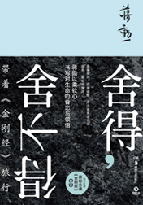

-
岛上书店
加布瑞埃拉·泽文（美）半个世纪前，一本书从出版到推向其他国家，尤其是中国，都会经历漫长而曲折的历程，而在口口传播的自媒体时代，一本书的全球化历程正以前所未有的速度进行。《岛上书店》2014年4月在美国出版以来，短短一年内席卷英国、德国等25国，创下了出版史上全球化最快的畅销纪录。据悉，《岛上书店》是曾经翻译过《麦田里的守望者》《一九八四》等著作的青年翻译家孙仲旭遗作，他于去年8月28日因抑郁症自杀，年仅41岁。孙仲旭生前在博客上写道：“《岛上书店》，我要译的一本新书。译这本书，满足了我好几个心愿……译这本书时，我想起我已经有三年多没有译过轻松的书了，我会珍惜这个机会。”

-
世界上有趣的事情太多
张佳玮消遣犯、恋物癖、典故控的接头读物，掉书袋达人张佳玮分享的碎知识，软学问，萌趣味知道得再多也不会被灭口哦~每一件事物的变革历史，都是从人类贪求快乐的本能出发，然后凝结下了类似的历史：最初的雏形、无数人的使用、匠人的盘算、新材质的使用，还有围绕着这个事物的愉悦与哀伤。 《世界上有趣的事太多》是一本趣闻典故随笔集。有吃茶喝水的悠然过往，也有大航海时代的漫漫征途，有背带裤和家具贴面的别致往事，还有春药男风的野史传说。这些事在张佳玮的笔下穿越时空，裹挟着古人的习俗和趣味来到我们眼前，替我们身边的器物讲一讲它们的故事，以及寄托其上的愉悦与哀伤。

-
既然已经走了这么远
张佳玮是“信陵公子”张佳玮的短篇小说，以及诸多“闪耀着钻石般灵光”、童话般温柔的小故事集合。这些文字多取材于中西方古代传说，语言幽默，令人莞尔。融入了童话、传奇等文学体裁的特征，缥缈充满想象力的文字凝结成的却是每个人都经历过的心情。

-
日落通天苑
王云超一百平米的房子，住着五户人，每个人的职业与生活都不尽相同：朝酒晚五西装革履的上市公司白领、混迹于夜生活的叛逆少女、薪水微薄艰难存活的小公司销售、声色场所工作的悲苦陪唱女、离异落魄的更年期母亲、渴望被爱的职业小三。此外与这些人纠葛不清的还有拜金任性的富贵少妇、冰冷无情的企业高管、好色低俗的社交青年、粗犷仗义的土豪包工头。 这是一副都市平民生活的终极画卷，当代中篇小说中，已很难见到如此饱满且生动的人物设定。

-
虚无的十字架
东野圭吾充分展现了东野圭吾的创作才华。东野圭吾这次选择的，是社会道德议题上一个两难的选择：关于罪与罚，是让犯人听到自己的死刑宣判而感到解脱？还是让他重返自由社会用尽一生赎罪？这正是东野圭吾想要展现的力量：现代社会关于死刑是否应该被废除的一次深刻的思考和解读。
- 
-
舍得，舍不得：带着《金刚经》旅行
蒋勋台湾美学大师蒋勋畅销新作，以柔软心书写对生命的眷恋与领悟，随书附赠蒋勋念诵《金刚经》CD 。京都永观堂、清迈无梦寺、加拿大奈恩瀑布……蒋勋带着《金刚经》，读经、抄经，旅行十方，在心的寺院里一殿一殿地拜去，在洪荒自然里看见生命的不同修行，在文学艺术里照见生命的不同可能，与一切有情众生，领会人生中的舍得与难舍

-
再见，少年
秋微故事里的角色，即使可以数度从头再来，他们还是会义无反顾地像当初一样成为原有的“自己”，就比如我的闺蜜，生而普通却极不安于普通的“贱人”米微微，她硬是掠取了被诸多女生暗恋的插班生武锦程——这份招摇的恋情，只是诸多不寻常发生中的一件小事。一群个性迥异的少年，皆因一位不按牌理出牌的班主任改变了最初的墨守成规：家境贫困不得不退学的璐璐成了最早掘金成功的创业者；以“中华田园青年”自嘲的小五在经历多动症的猜疑和打压后终于有机会天性释放；

-
咸也好，淡也好
林清玄华文世界心灵疗愈大家林清玄25年写作生涯超越之作，作者亲笔作序！愿你以一颗从容有情的心，活在当下，品尝生命中的酸甜苦辣，在柴米油盐的平庸生活中品味人生的真谛。